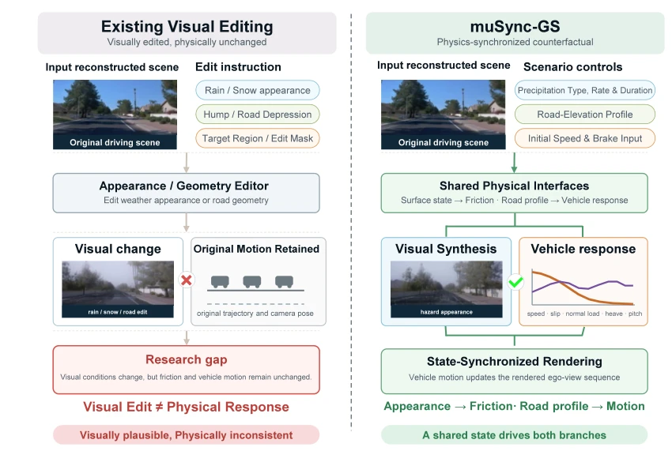
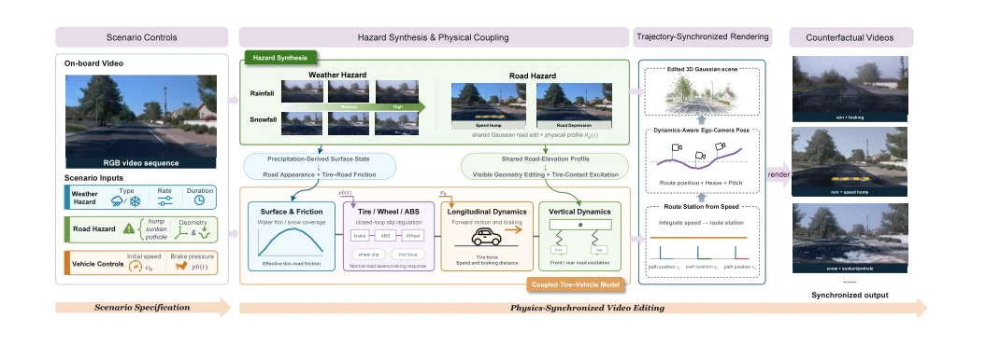
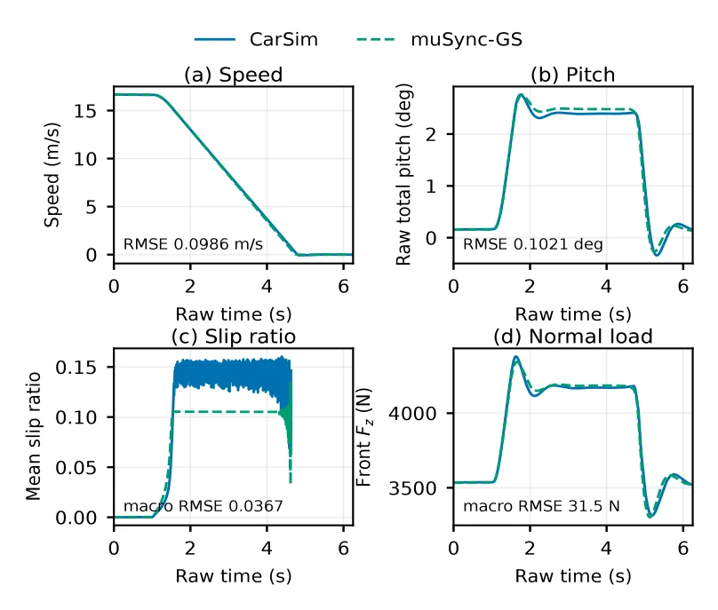
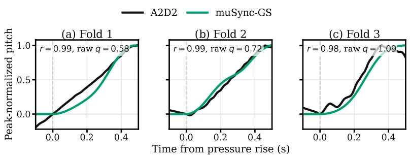
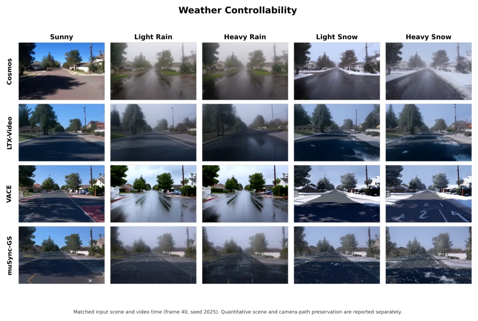
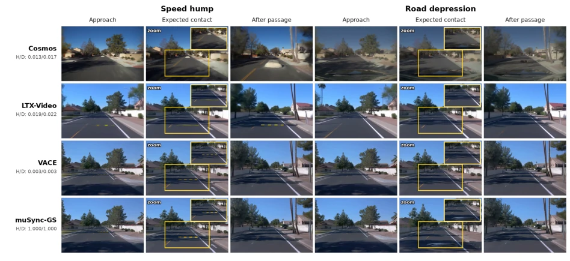
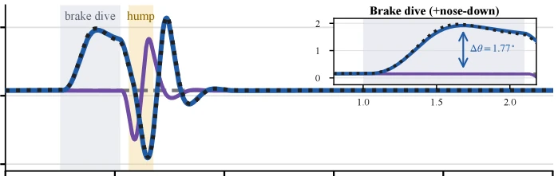

muSync-GS brings a "physical wake-up call" to the autonomous driving synthetic data community. Previous video generation models (such as WeatherEdit [8], VACE [9]) are like "skin-painting masters" who only know how to draw; they can make the rain fall heavily or the road pits deep, but the car still runs according to the original script, as if physical laws are suggestions rather than mandates. This paper forcibly binds tire friction, vehicle pitch, and camera trajectory onto the same physical engine, achieving "what you see is what you get, what you get is what moves". Although it relies on traditional simulators like CarSim, appearing slightly "retro", in today's era of proliferating generative models, this "primitive steel-making" coupling mechanism has instead become scarce hard currency. However, it currently only focuses on longitudinal and vertical dynamics; lateral control (such as steering) and more complex tire models remain blank, and its generalization ability to real-world data still requires more verification, after all, the gap between simulation and reality cannot be bridged just by adding a physical engine.
Autonomous driving systems rely extremely heavily on high-quality data, especially involving rare and high-risk scenarios such as severe weather (rain/snow) and geometric obstacles (speed bumps, potholes). However, collecting these data on-site is costly and highly risky [1]. Existing video generation and 3D Gaussian editing methods (such as WeatherEdit [8], RainyGS [11], Weather-Magician [12]) can flexibly modify weather appearance or road geometry, but often decouple visual editing from vehicle physical response. For example, the model can render a slippery road, yet retain braking distances and trajectories from originally dry roads, causing the generated video to be physically contradictory [2, 3]. On the other hand, vehicle simulators (such as CarSim) can calculate dynamics precisely, but their output usually lacks photorealistic visual scenes and cannot be directly used for visual perception training. This disconnection between "visual" and "physical" makes existing synthetic data difficult to truly reflect vehicle dynamic responses under different road conditions, limiting the application of generative world models in safety-critical scenarios. muSync-GS aims to fill this gap, building a unified mechanism that maps weather and road control simultaneously to visual scene changes and vehicle physical responses.

Figure 1: Conceptual comparison between appearance-only editing and muSync-GS. Appearance-only editing modifies weather or road geometry while reusing the original ego-camera motion, whereas muSync-GS synchronizes appearance, tire–road interaction, vehicle response, and ego-camera motion through a shared scenario state.
The core of muSync-GS is a physical synchronization framework that tightly couples weather, road geometry, and vehicle dynamics through three shared interfaces. The overall process is as follows: First, input control variables (weather type, precipitation rate, snow accumulation time, initial speed, brake pressure, road elevation profile) are converted into shared surface states, friction coefficients, and geometric representations. Specifically, precipitation parameters (rain/snow) calculate road water film depth and snow coverage through physical formulas, thereby mapping out reference friction coefficients (μc) and rendering control parameters. Road elevation profiles (such as speed bumps) are defined as shared geometric functions, used both to edit visible road geometry in the 3D Gaussian scene and as vertical excitation input for tire contact points. Second, based on shared friction coefficients and road excitation, a coupled longitudinal-vertical vehicle model (4-DOF half-car model) is activated. This model uses the Burckhardt tire curve to calculate longitudinal braking force and slip ratio, while combining road slope to calculate vehicle pitch (pitch) and vertical loads (normal loads). Finally, simulated vehicle speed, path position, and vehicle attitude (heave and pitch) are used to dynamically correct the reference camera trajectory, generating ego-camera motion strictly synchronized with the physical state. In the rendering phase, using the corrected camera pose, combined with atmospheric particles, road wet/snow effects for Gaussian splatting rendering, and outputting video containing frame-level physical annotations. This design ensures that visual "heavy rain" necessarily corresponds to physical "longer braking distance" and "vehicle pitch change", achieving true physical consistency.

Figure 2: Overview of muSync-GS. Weather, road-elevation, and vehicle controls are converted into shared surface, friction, and geometry representations. The muSync-GS vehicle model predicts speed, path position, wheel slip ratios, symmetric wheel normal loads, and pitch. These states update the route position and ego-camera pose for trajectory-synchronized rendering, producing edited videos with frame-wise physical annotations.
The authors conducted extensive evaluation on scenes reconstructed on the Waymo dataset and compared with baseline models such as Cosmos, LTX-Video, VACE. Experiments are divided into three parts: 1) Frozen parameter verification: On 12 unseen CarSim cases (covering different precipitation levels, brake inputs, and road profiles), muSync-GS speed RMSE is 0.0273 m/s, pitch angle RMSE is 0.0590°, slip ratio RMSE is 0.0101, wheel load RMSE is 26.61 N, showing extremely high physical consistency. 2) Real vehicle verification: On 14 braking events in the A2D2 dataset, the model successfully reproduced the dynamic trend of initial brake-dive, with pitch angle correlation coefficient reaching 0.901. 3) Video synchronization and controllability: Compared to baseline models, muSync-GS has significantly lower NRMSE on geometric response (speed bumps/potholes) (0.316/0.431 vs baseline near no response), and can maintain monotonic weather severity control. Ablation experiments show that removing weather-friction coupling leads to braking distance prediction failure, while removing vertical coupling fails to simulate vehicle pitch. These results prove that muSync-GS successfully achieves dynamic synchronization between visual and physical while maintaining visual quality.

Figure 3: muSync-GS and CarSim trajectories for a held-out 5 mm/h rain braking case: speed, pitch, mean wheel slip ratio, and front-wheel normal load.

Figure 4: Peak-magnitude-normalized measured and predicted brake-dive responses from each held-out A2D2 drive. The corresponding unnormalized peak ratio qθ is reported in each panel.

Figure 5: Five-level weather controllability at frame 40 and seed 2025: sunny, light rain (10 mm/h), heavy rain (50 mm/h), light snow (1 mm/h water equivalent), and heavy snow (3 mm/h water equivalent). Every row uses a matched source scene and video time.

Figure 6: Road editing under the same dry-weather input (seed 2025) before contact, at front-axle contact, and after passage. Insets enlarge the contact region; H/D labels report the hump/depression response from Table 3.

Figure 7: Coupled-physics ablation: (a) stopping distance across rain and snow severity; (b) pitch under 50 mm/h rain braking and speed-hump traversal. Shaded regions mark braking and front-axle traversal.